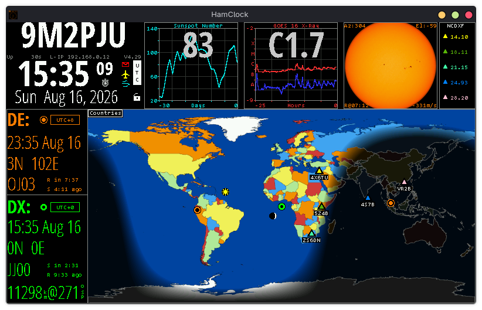
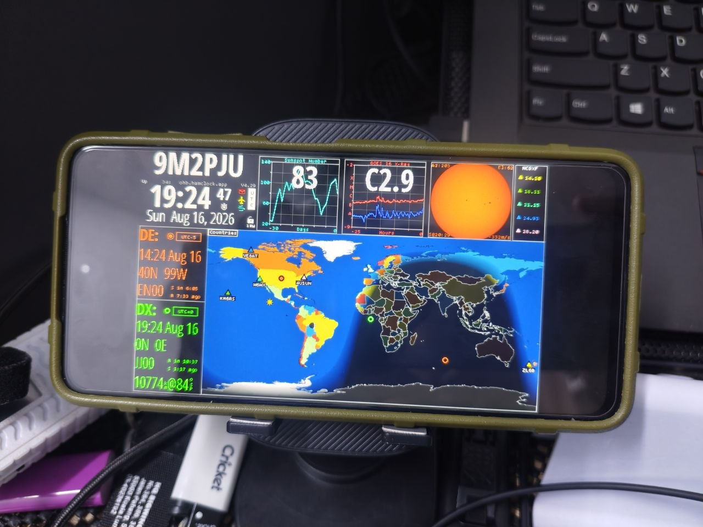

The premier open-source space weather, radio propagation, VOACAP modeling, satellite tracking, and telemetry dashboard for amateur radio operators worldwide.

Real-time solar data, dynamic VOACAP HF propagation, on-air QSO maps, satellite tracking, and shack automation.
Run standalone with the official Android APK (embedded native C++ engine, edge-to-edge fullscreen, 24/7 background service) or via Termux with Fully Kiosk Browser for low-power (<3W) shack displays.
Hardcoded directly to ohb.hamclock.app:80. Seamless data streaming without /etc/hosts workarounds or legacy CSI server downtime.
Full 1-axis (Azimuth) and 2-axis (Az/El) antenna rotator tracking via Hamlib rotctld. Auto-turn to DX bearing and real-time satellite tracking.
Connects to your rig with rigctld or flrig. Auto-switches VOACAP propagation bands as you turn your VFO, with Click-to-Tune (QSY) from DX spots.
Live satellite ground tracking (ISS, AO-91, RS-44, IO-117) with Doppler-shifted frequency telemetry, pass azimuth/elevation timers, and sky tracks.
Live Solar Flux Index (SFI), Sunspot Number (SSN), Planetary K-index, Solar Dynamic Observatory (SDO) multi-wavelength imagery, and Aurora ovals.
Receive real-time UDP QSO broadcasts from WSJT-X, N1MM Logger+, and Log4OM, rendering on-air contacts instantly as glowing pins on the world map.
Transform any spare Android phone, tablet, or TV box into a dedicated, low-power (<3W) shack touch clock. Install the standalone official Android App (.apk) with embedded C++ engine and edge-to-edge UI, or run via Termux with Fully Kiosk Browser.
http://<PHONE-IP>:8081/live.html.
Bespoke, razor-sharp vector/bitmap scaling pre-compiled for any display or remote device.
Ideal for 5"–7" Raspberry Pi touchscreens, mobile browsers, and compact kiosk builds.
The sweet spot for desktop monitors, iPads, tablets, and shack dashboard screens.
Stunning crispness for high-DPI computer monitors and wide shack control screens.
Maximum detail for large 4K televisions, club station dashboards, and emergency ops centers.
HamClock was conceived and brought to life by **Elwood Downey (WB0OEW)** under the banner of Clear Sky Institute. An accomplished astronomer and software architect (author of *XEphem*), Elwood gifted the amateur radio world this masterwork of space science and radio propagation telemetry.
Your contributions help keep the Open HamClock Backend (OHB) online and support ongoing development of packaging for Android, Windows, and Linux.